class: center, middle # L'architecture matérielle ## Le processeur graphique (GPU) <p>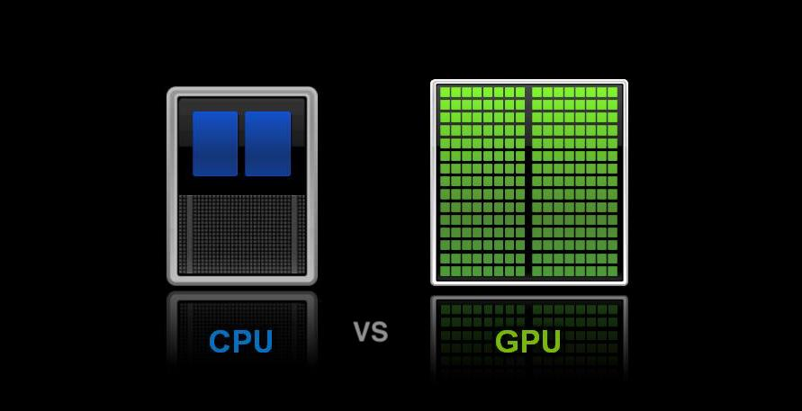</p> --- ## 30 ans d'évolution... <div style="text-align: center; margin-top: 30px;"> <div style="display: inline-block; width: 45%; margin-right: 3%;"><p>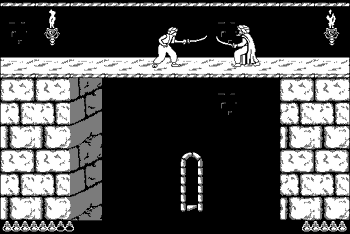</p><br><strong>1989</strong> : <em>Prince of Persia</em></div><div style="display: inline-block; width: 45%;"><p>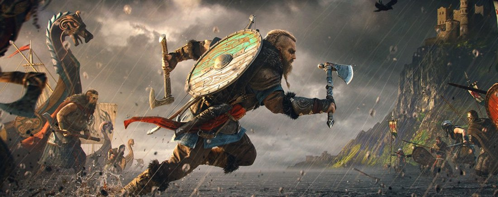</p><br><strong>2020</strong> : <em>Assassin's Creed Valhalla</em></div> </div> --- ## 30 ans d'évolution... <div style="text-align: center; margin-top: 30px;"> <div style="display: inline-block; width: 45%; margin-right: 3%;"><p>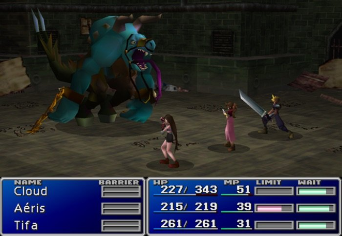</p><br><strong>1997</strong> : <em>Final Fantasy VII</em></div><div style="display: inline-block; width: 45%;"><p>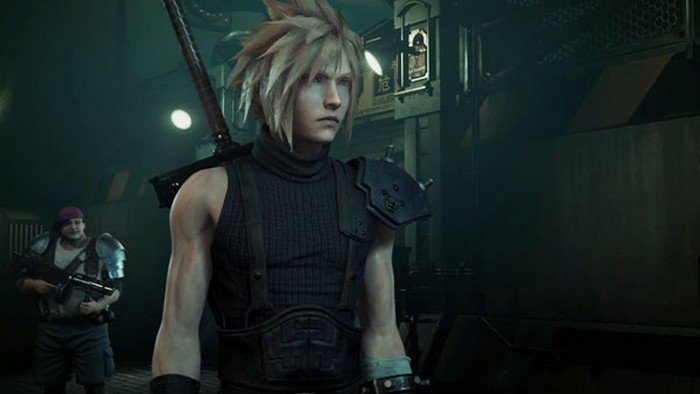</p><br><strong>2020</strong> : <em>Final Fantasy VII Remake</em></div> </div> Comment est-il possible de calculer de telles images **en temps réel** ? --- ## Pourquoi un processeur graphique ? Une image affichée à l'écran est un tableau de pixels (souvenez-vous du codage des images !). * Un écran Full HD compte 1920 × 1080 = **2 073 600 pixels**. * Un jeu fluide affiche **60 images par seconde**. * Il faut donc calculer 2 073 600 × 60 ≈ **124 millions de pixels par seconde**... et chaque pixel demande de nombreux calculs (couleur, lumière, ombres, textures) ! Le processeur central (CPU) serait complètement débordé. On confie donc ce travail à un processeur **spécialisé** : le **GPU** (*Graphics Processing Unit*), ou processeur graphique. --- ## CPU ou GPU ? <div style="text-align: center;"> </div> * Un **CPU** contient **quelques cœurs** très puissants et polyvalents, optimisés pour les traitements **séquentiels** (une suite d'étapes qui dépendent les unes des autres). * Un **GPU** contient **des milliers de cœurs** plus simples, optimisés pour les traitements **massivement parallèles** : la même opération appliquée en même temps à des milliers de données. **Analogie** : pour corriger 1000 additions simples, mieux vaut 1000 élèves qui en font chacun une, plutôt que 4 professeurs de mathématiques, aussi brillants soient-ils ! --- ## CPU ou GPU : la démonstration <p>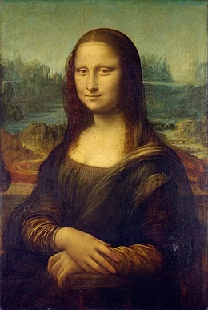</p> En 2008, les présentateurs de l'émission *MythBusters* ont fait une démonstration pour NVIDIA : * un robot « CPU » peint un smiley point par point, **l'un après l'autre** ; * un robot « GPU » tire **1100 billes de peinture en même temps** et peint la Joconde en une fraction de seconde ! <a href="https://www.youtube.com/watch?v=-P28LKWTzrI" target="_blank">→ Voir la vidéo</a> --- ## Le pipeline graphique <div style="text-align: center;"> <p>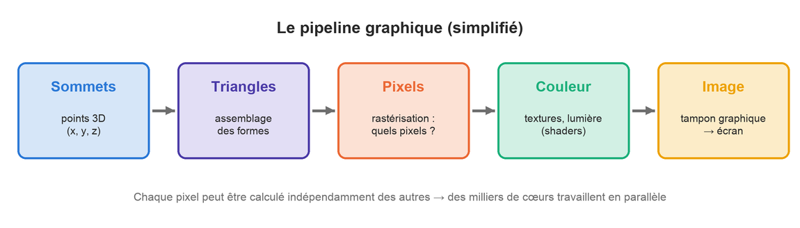</p> </div> 1. Les objets 3D sont décrits par des **sommets** (des points avec des coordonnées x, y, z). 2. Ces sommets sont reliés en **triangles** qui forment la surface des objets. 3. La **rastérisation** détermine quels **pixels** de l'écran chaque triangle recouvre. 4. Les **shaders** (petits programmes exécutés par le GPU) calculent la **couleur** de chaque pixel : textures, lumières, ombres... 5. L'image terminée est placée dans le **tampon graphique**, puis envoyée à l'écran. --- ## Le contrôle par le CPU Le GPU ne travaille pas seul : c'est le **CPU qui le pilote**. * Le **CPU** exécute le jeu : il gère la logique, l'intelligence artificielle des personnages, la physique, le son... et prépare la scène à afficher. * Il envoie au GPU les données et les **commandes** de dessin (« dessine cet objet, avec cette texture, à cet endroit ») via un **bus** très rapide, le **PCI Express**. * Le **GPU** calcule l'image et l'envoie à l'écran. <span style="color: red;">→ Les deux doivent être équilibrés : un GPU très puissant associé à un CPU trop faible attendra sans cesse ses commandes (et inversement). Souvenez-vous : « seul le plus mauvais subsiste » !</span> --- ## GPU intégré ou carte graphique ? * Un **GPU intégré** est gravé sur la même puce que le CPU. Il utilise une partie de la **mémoire vive** de l'ordinateur. Il consomme peu et suffit pour la bureautique, la vidéo et les jeux peu exigeants. * Une **carte graphique** (GPU dédié) est une carte séparée, branchée sur la carte mère. Elle possède sa propre **mémoire vidéo** (VRAM), très rapide (par exemple de type GDDR6), et son propre système de refroidissement. Les principaux fabricants de GPU : **NVIDIA** (GeForce), **AMD** (Radeon) et **Intel** (Arc). Apple et Qualcomm intègrent leurs propres GPU dans leurs puces. --- ## À quoi sert la mémoire vidéo ? La mémoire vidéo (VRAM) contient tout ce qui est nécessaire au calcul de l'image : * les **textures** : les images 2D que l'on « colle » sur les objets 3D pour les habiller ; * le **tampon graphique** (*frame buffer*) : l'image en cours de calcul ou d'affichage ; * le **tampon de profondeur** (*Z-buffer*) : la distance de chaque pixel par rapport à la caméra, pour savoir quels objets sont cachés par d'autres ; * les données nécessaires à l'**anticrénelage** (*anti-aliasing*), qui supprime l'effet « escalier » sur les bords des objets. .pull-left[ <div style="text-align: center;"><p>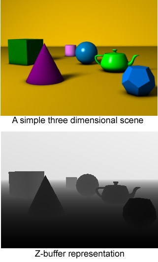</p></div> ] .pull-right[ <div style="text-align: center;"><p>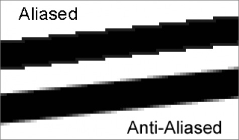</p></div> ] --- ## Calcul : la taille du tampon graphique Chaque pixel est codé sur **32 bits** (4 octets : rouge, vert, bleu + transparence). * Full HD : 1920 × 1080 × 4 octets = 8 294 400 octets ≈ **8,3 Mo** * 4K : 3840 × 2160 × 4 octets = 33 177 600 octets ≈ **33,2 Mo** Le GPU utilise au moins **deux tampons** : pendant qu'une image est affichée, la suivante est calculée dans l'autre (c'est le *double buffering*). <span style="color: red;">→ Les tampons ne pèsent que quelques dizaines de Mo : ce sont surtout les **textures** et l'**anticrénelage** qui remplissent la mémoire vidéo.</span> --- ## Mémoire vidéo : quelques idées reçues **« Une carte avec 8 Go de mémoire est plus rapide qu'une carte avec 4 Go. »** → **Faux** : la quantité de mémoire n'influence pas les performances **tant qu'elle n'est pas saturée**. Les fabricants mettent parfois beaucoup de mémoire sur des cartes d'entrée de gamme... pour mieux les vendre. **« Avec deux cartes graphiques de 4 Go, j'ai 8 Go de mémoire vidéo. »** → **Faux** : chaque GPU accède exclusivement à sa propre mémoire, et les données y sont **dupliquées**. On ne peut pas additionner les mémoires. **Et si la mémoire vidéo est saturée ?** Les données sont envoyées dans la mémoire vive via le bus PCI Express, beaucoup plus lent : les performances s'effondrent. --- ## Estimer les performances d'un GPU * le **nombre de cœurs** (appelés *CUDA cores* chez NVIDIA, *stream processors* chez AMD) ; * la **fréquence** du GPU ; * la **quantité** de mémoire vidéo (pour les hautes définitions et les textures détaillées) et surtout son **débit** ; * la **génération** (l'architecture) du GPU : une carte récente d'entrée de gamme peut battre une ancienne carte haut de gamme. En pratique, on compare les GPU grâce à des **tests** (*benchmarks*) : on mesure le nombre d'**images par seconde** (FPS) obtenues dans un même jeu, avec les mêmes réglages. --- ## Temps réel ou images pré-calculées ? <div style="text-align: center;"><p>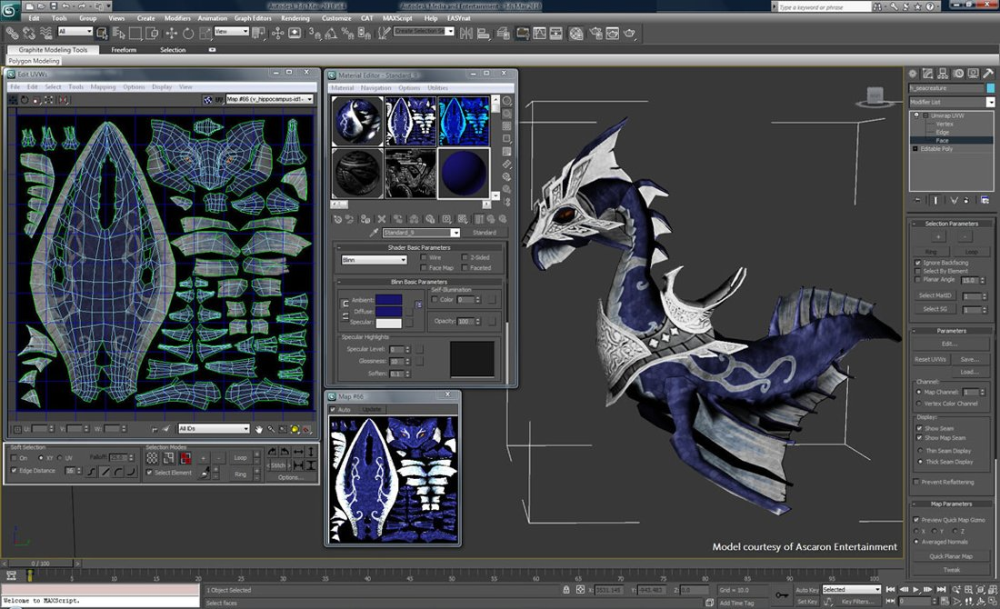</p><p>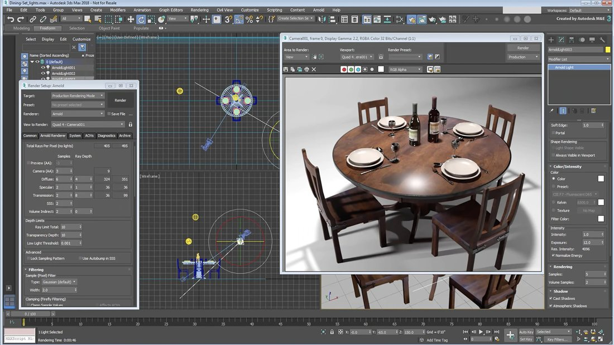</p></div> * **Temps réel** (jeux vidéo, réalité virtuelle) : l'image doit être calculée en moins de 1/60<sup>e</sup> de seconde. On accepte quelques approximations. * **Images pré-calculées** (films d'animation, effets spéciaux) : chaque image peut demander **plusieurs heures de calcul**, réparties sur des milliers d'ordinateurs (les *render farms*). Le résultat est photo-réaliste. Les moteurs de jeu actuels (Unreal Engine...) rapprochent de plus en plus ces deux mondes. --- ## Le GPU, bien plus qu'un processeur graphique Grâce à leur puissance de calcul parallèle, les GPU sont aujourd'hui utilisés pour bien d'autres choses que l'affichage : on parle de **GPGPU** (*General-Purpose computing on GPU*). .pull-left[ * **Médecine** : imagerie 3D (scanner, IRM) * **Voitures autonomes** : analyse des images des caméras en temps réel * **Météorologie** : simulation du climat sur des supercalculateurs * **Intelligence artificielle** : l'entraînement des IA comme ChatGPT se fait sur des milliers de GPU ] .pull-right[ <p>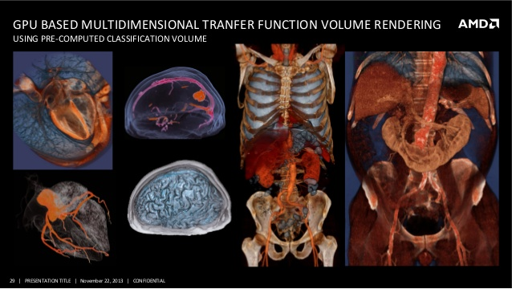</p><br> ] --- ## Exercice de synthèse Un joueur hésite entre deux configurations pour jouer en **4K** (3840 × 2160) : * **PC A** : processeur très haut de gamme, carte graphique d'entrée de gamme avec **8 Go** de mémoire vidéo ; * **PC B** : processeur milieu de gamme, carte graphique haut de gamme avec **6 Go** de mémoire vidéo. 1. Combien de pixels le GPU doit-il calculer par seconde pour afficher 60 images par seconde en 4K ? 2. Quelle est la taille d'un tampon graphique en 4K (32 bits par pixel) ? 3. Le vendeur affirme que le PC A est meilleur « car il a plus de mémoire vidéo ». Qu'en pensez-vous ? 4. Quel PC conseillez-vous ? Justifiez. --- ## Sources des images * https://www.nvidia.com * http://www.tomshardware.fr/articles/cartes-graphiques-mythes,2-899-5.html * *Prince of Persia* (1989), *Assassin's Creed Valhalla* (2020), *Final Fantasy VII* (1997 et 2020) : captures d'écran des éditeurs * Images : ancien cours d'informatique (INDBG)